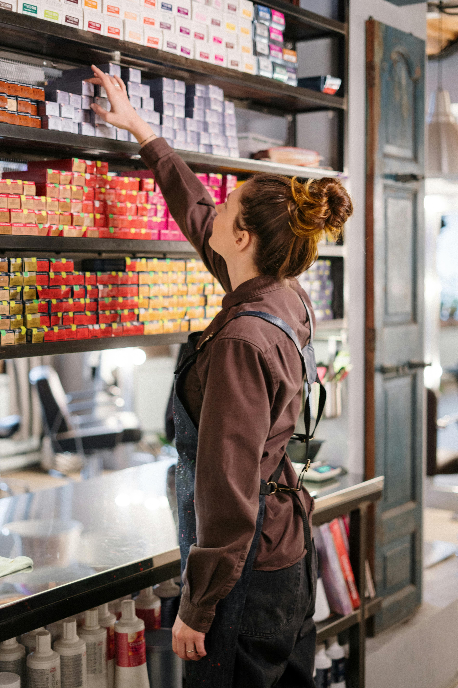
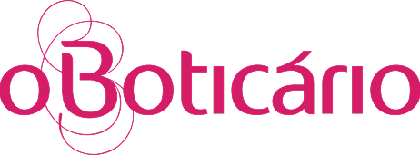
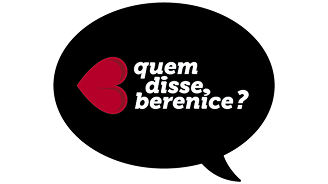

A Smart Insight nasceu com o propósito de transformar dados em
decisões inteligentes para o varejo de cosméticos. Como uma Beauty Tech, acreditamos que entendender o
comportamento do consumidor
no ponto de venda, especialmente durante a interação com as amostras, é essencial para gerar estratégias mais
asservivas, aumentar a competitividade e impulsionar resultados
Nosso objetivo é oferecer ás marcas de beleza uma visão clara e baseada em dados sobre o real interesse dos
seus
clientes. Aplicamos sensores de distância (integrados via Arduino) diretamente nas prateleiras e displays de
maquiagem.
Essa tecnologia identifica cada vez que um cliente interage com um testador ou produto. Essas informações são
coletadas, analisadas e transformadas em dashboards diários,
permitindo mensurar exatamente a jornada da prateleira: o que é provado, o que é comprado sem teste e,
principalmente, a taxa de conversão real de cada cosmético
Identificação dos melhores pontos no expositor e instalação discreta dos sensores para compreender profundamente a dinâmica da sua prateleira.
Monitoramento contínuo das interações, focado em regitrar com precisão cada momento em que o consumidor demonstra interesse pelas amostras.
Monitoramento contínuo das interações, focado em regitrar com precisão cada momento em que o consumidor demonstra interesse pelas amostras.
Com dados processados e a visão do ponto de venda fortalecida, entregamos relatórios diários. A otimização da prateleira ocorre para que as metas da marca sejam atingidas.

